CALL OF THE NIGHT
Nazuna Nanakusa est l'un des personnages principaux de Call of the Night. Vampire vivant principalement la nuit, elle possède une personnalité indépendante, amusante et particulièrement imprévisible.
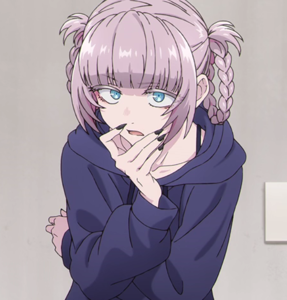
INFORMATIONS
Nazuna Nanakusa est une vampire vivant dans la ville pendant les heures nocturnes. Elle passe une grande partie de son temps à explorer la nuit et à rencontrer différentes personnes.
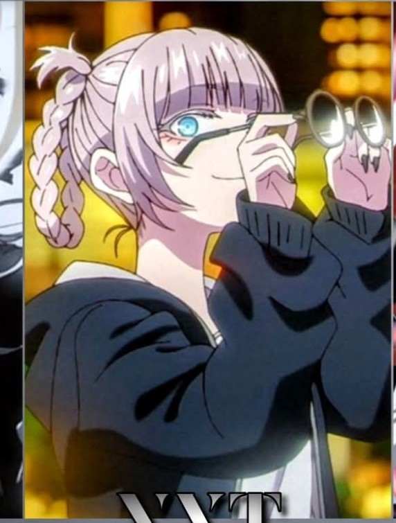
Nazuna Nanakusa
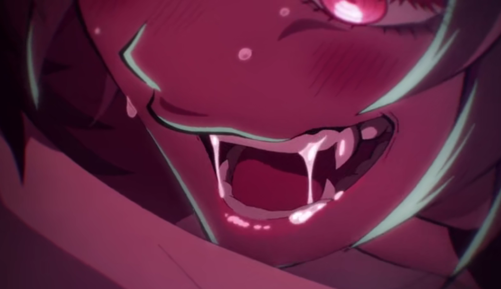
Vampire
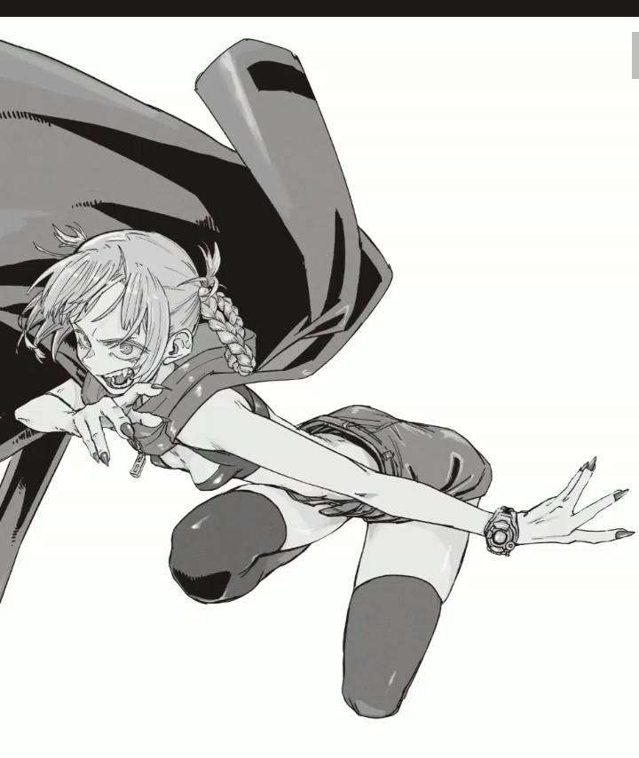
Principalement active la nuit
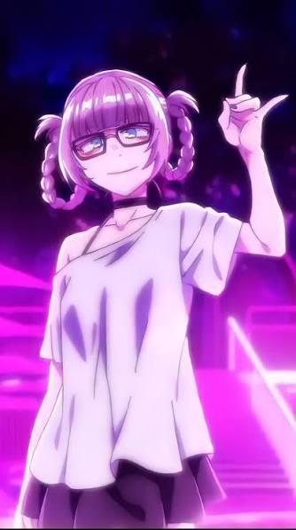
SON HISTOIRE
L'histoire de Call of the Night commence lorsque Ko Yamori commence à sortir pendant la nuit après avoir perdu son intérêt pour sa vie quotidienne.
Durant l'une de ses promenades nocturnes, il rencontre Nazuna Nanakusa. Elle lui fait découvrir un monde différent de celui qu'il connaît pendant la journée.
Nazuna devient progressivement une personne importante dans son quotidien nocturne et leur relation évolue au fil de leurs rencontres.
PERSONNALITÉ
Nazuna aime vivre selon ses propres règles et n'apprécie pas particulièrement les contraintes.
Elle possède une attitude plutôt détendue et semble profiter pleinement de sa vie nocturne.
Nazuna aime taquiner les autres et possède un humour assez particulier.
Elle s'intéresse aux personnes qu'elle rencontre et apprécie les nouvelles expériences.
PERSONNAGES
Ko est l'un des personnages les plus proches de Nazuna. Leur rencontre pendant la nuit est au centre de l'histoire de Call of the Night.
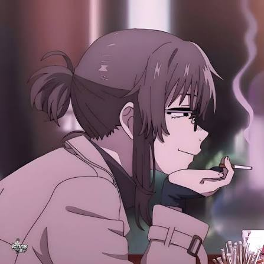
Anko est une détective spécialisée dans les vampires. Elle possède une relation conflictuelle avec le monde auquel Nazuna appartient.
COLLECTION
Cette partie est réservée aux images que tu souhaites ajouter au site.
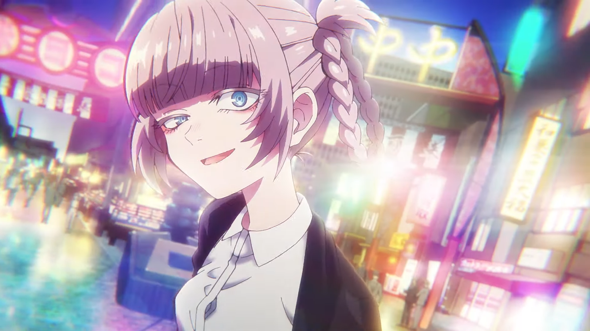
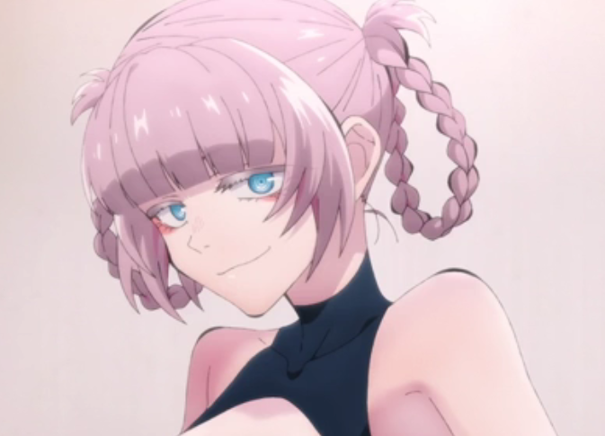
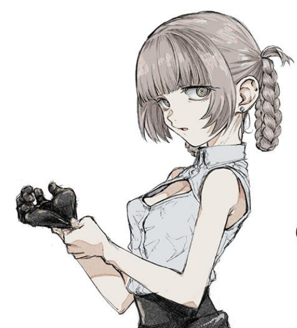
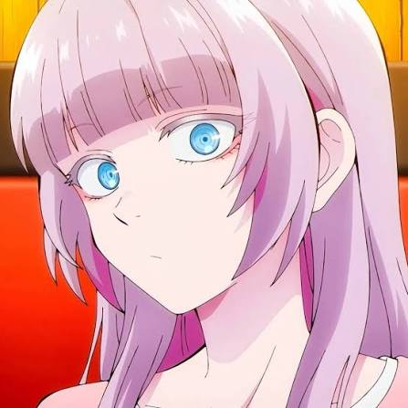
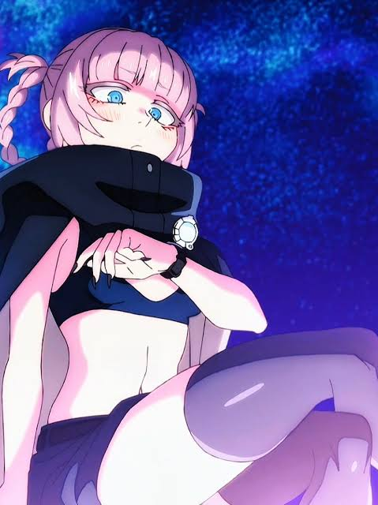
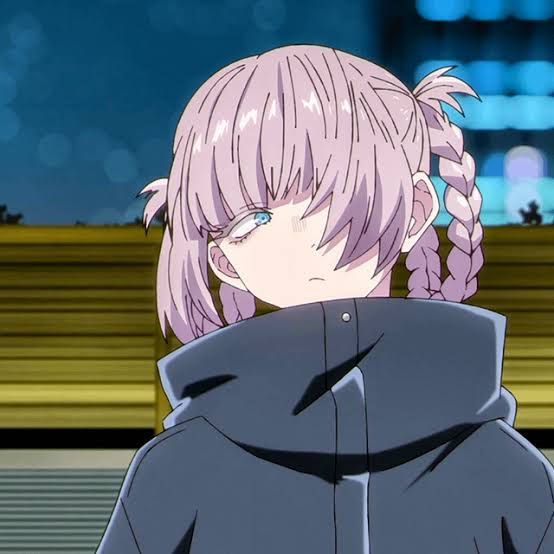
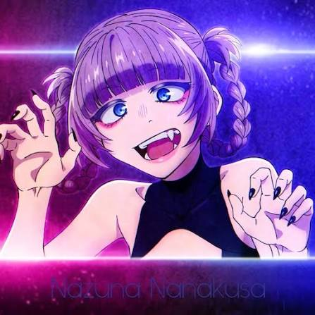
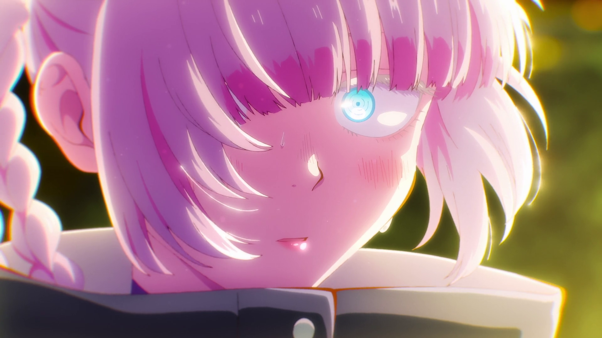
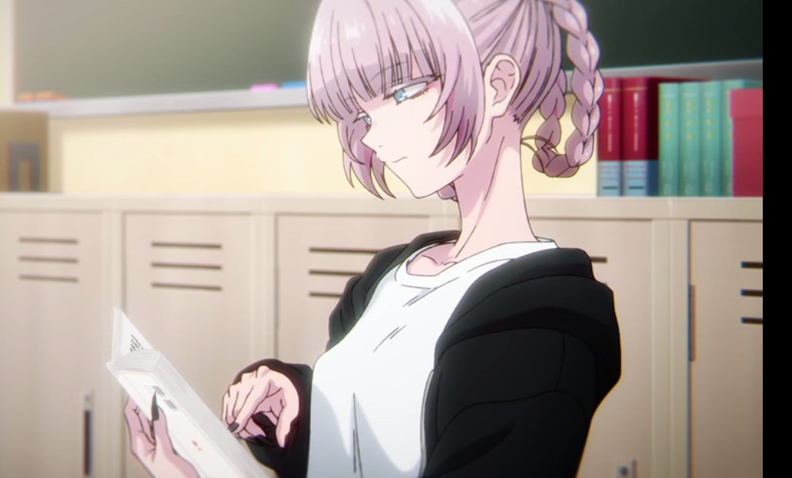
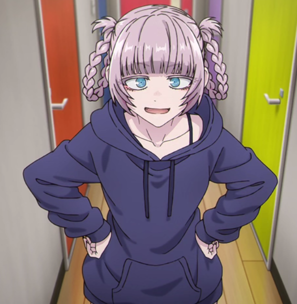
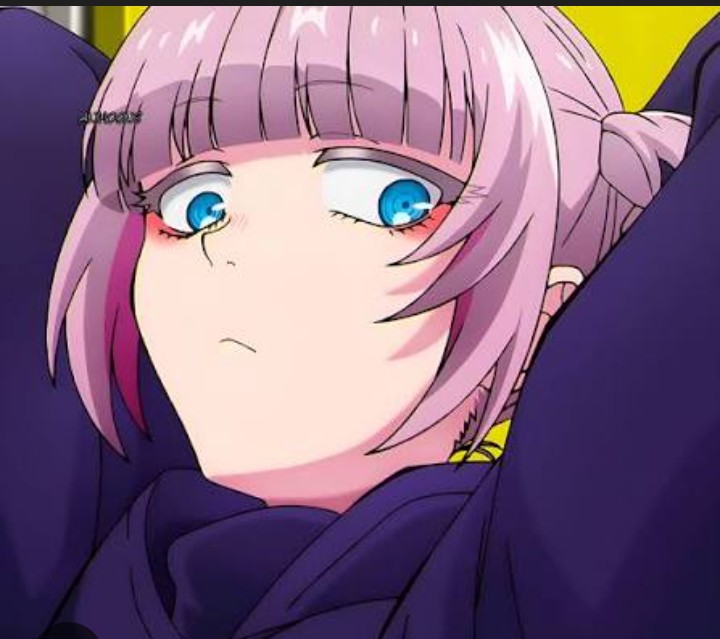
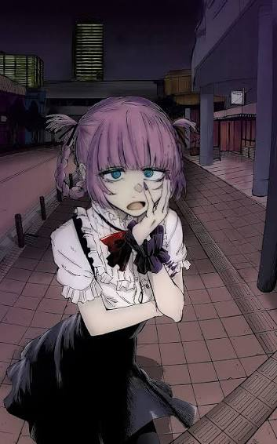
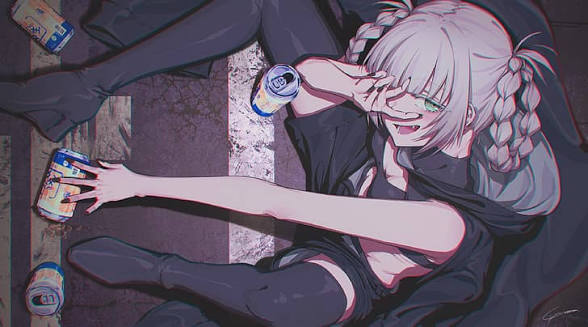
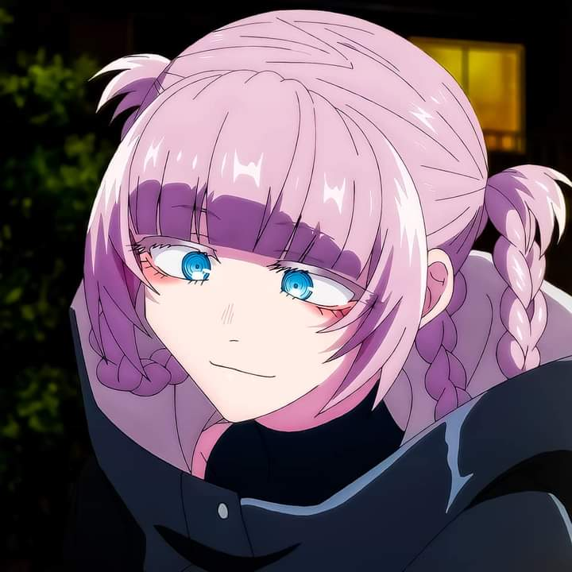
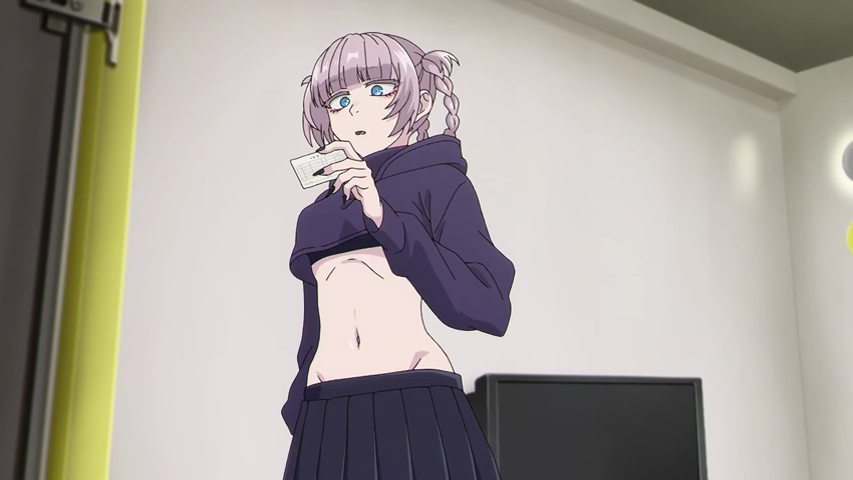
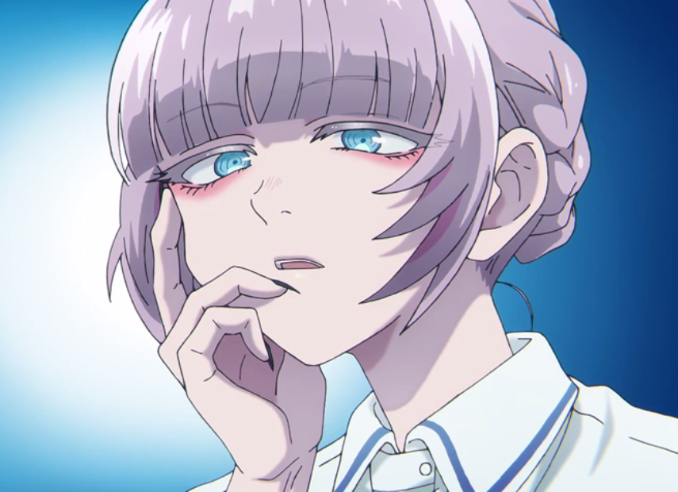
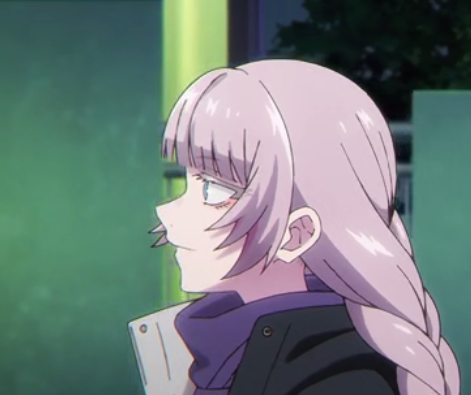
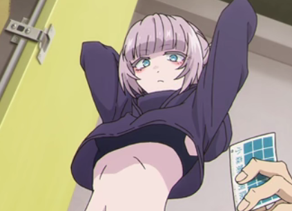
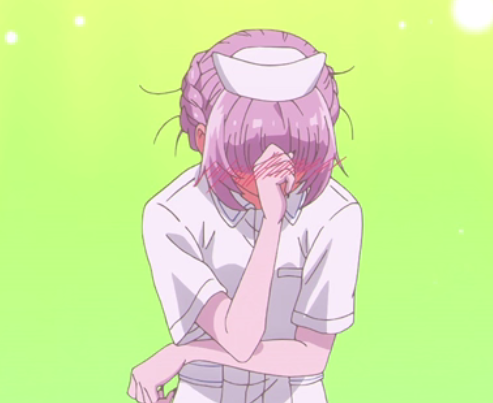
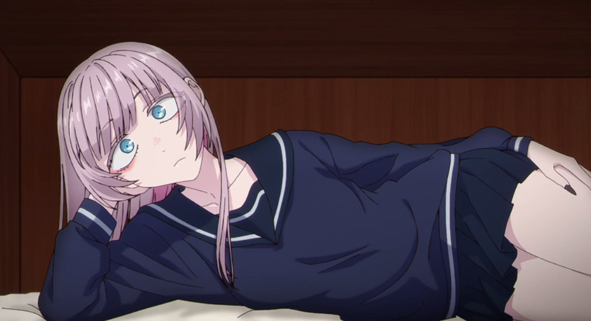
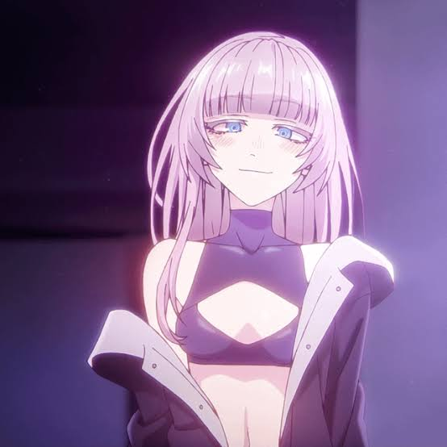
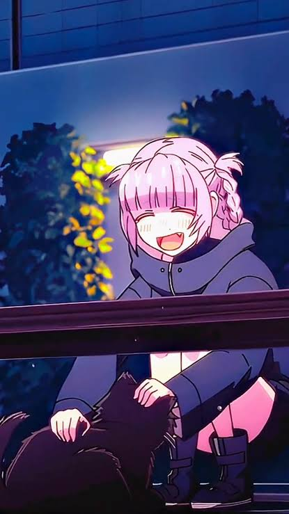
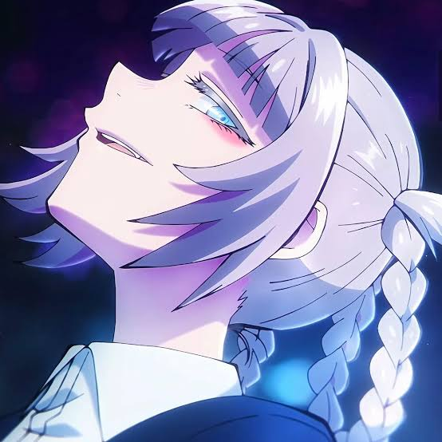